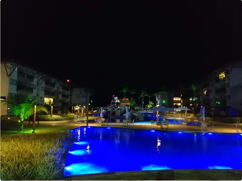

Ficou com alguma dúvida?
Fale com a gente no WhatsApp. Respondemos rápido e sem compromisso.
Falar no WhatsAppMuro Alto · Ipojuca · Pernambuco
Quem se hospeda no Polinésia usa toda a estrutura de lazer do Samôa Beach Resort: as piscinas, a praia, os jardins e o café da manhã.

Fale com a gente no WhatsApp. Respondemos rápido e sem compromisso.
Falar no WhatsApp